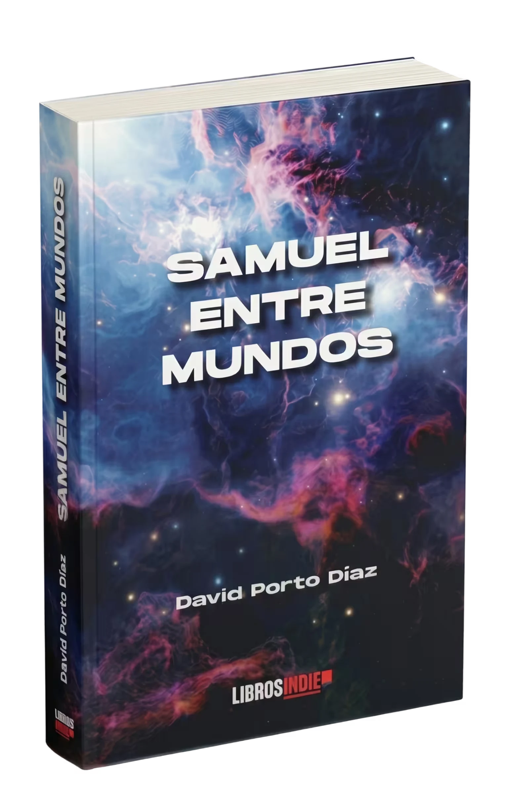
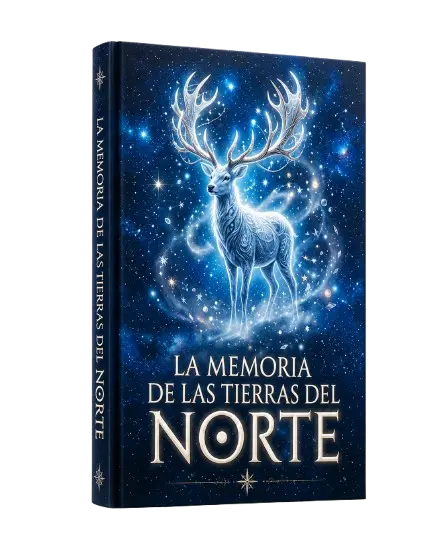

Publicado
Samuel entre mundos · Libros Indie
Escritor gallego · Fantasía juvenil española · Madrid
Hay mundos a los que solo se puede volver una vez.
Soy David Porto Díaz, escritor de fantasía juvenil española y autor de Samuel entre mundos, una novela de portales, magia con coste y secretos familiares publicada por Libros Indie.
«El ritmo del libro es trepidante y siempre tiene lista una nueva sorpresa.»
Publicado
Samuel entre mundos · Libros Indie
En publicación
Las manecillas del recuerdo · Monza Ediciones
Premio literario
Primer Premio · Letras Como Espada · 2026
¿Por dónde empezar?
Empieza por Samuel entre mundos: portales, secretos familiares y una magia que siempre exige algo a cambio.
Bio, ficha técnica, fotos, portada y contacto para entrevistas, firmas o presentaciones.
Ir al kit de prensaPróximas firmas, nuevos proyectos y noticias del autor sin depender del algoritmo.
Contacto y redesSobre Samuel entre mundos
En Samuel entre mundos, la magia no aparece para cumplir deseos. Aparece para exigir respuestas. Noveris es una ciudad de portales, canalizadores y reglas antiguas, pero el verdadero peligro está más cerca: una familia que llama protección a lo que quizá siempre fue encierro.
También puedes explorar portal fantasy juvenil en español, leer qué es el portal fantasy o descubrir libros de fantasía juvenil española 2025-2026.
Sobre mí
David Porto Díaz es un escritor gallego residente en Madrid, autor de Samuel entre mundos (Libros Indie, 2025), novela de fantasía juvenil española. Ganador del Primer Premio Letras Como Espada 2026 y finalista del Premio Nacional de Literatura Infantil Juan Andrés Teno (babidibulibros, 2025). Escribe historias donde los portales no son una escapatoria, la magia exige un precio real y los secretos familiares pueden romper dos mundos.
David Porto Díaz nació en Pontevedra y reside en Madrid. Con formación en marketing online y experiencia en tecnología, entiende tanto la sensibilidad del lector como la estructura que sostiene una historia. Esa combinación —análisis, ritmo y mirada hacia el público— atraviesa también su forma de escribir.
Debutó con Samuel entre mundos, una novela de fantasía que combina aventura, identidad y crecimiento personal. Le interesan las historias que avanzan, proponen preguntas y respetan la inteligencia del lector.
Cuando no escribe, viaja, busca buena comida y toma notas mentales de lugares que quizá acaben convertidos en escenarios.
Escritor · Madrid
Formación en marketing online, experiencia en tecnología y una novela publicada. La misma mirada analítica que entiende audiencias, puesta al servicio de la ficción.
Libros
Samuel entre mundos narra la historia de Samuel Osborne, un joven de ojos verdes cuya medalla despierta el poder de los canalizadores con conciencia en la ciudad de Noveris. La trama enfrenta a las facciones Zunthar y Marelian tras la Guerra de los Cristales, explorando el precio de la magia y el misterio del Espejo Ancestral.

Amazon · Casa del Libro · Más librerías
La medalla de Samuel Osborne funciona como un canalizador anómalo: no emite luz, sino pulsos de resonancia cuando la barrera dimensional pierde estabilidad. En Noveris, cada objeto mágico conserva memoria material y toda energía desplazada exige compensación física.
Edición en tapa blanda de 422 páginas, con mapa detallado de Noveris y cubierta diseñada alrededor de la metalurgia de los canalizadores: superficies oscuras, brillo de medalla y sensación de portal físico. El objeto-libro refuerza la lógica técnica de la magia que cuenta.
Qué encontrarás
¿Quieres saber más antes de decidir? Recibe el primer capítulo gratis en tu email.
Ejemplar firmado
Si quieres un ejemplar dedicado de Samuel entre mundos, escribe al autor y recibirás la información de disponibilidad, dedicatoria y envío.
Solicitar ejemplar firmadoAutor premiado en Letras Como Espada · Finalista Top 10 del Premio Juan Andrés Teno · 5/5 en Amazon España
También en librerías
«El ritmo del libro es trepidante y siempre tiene lista una nueva sorpresa, un giro inesperado que hace que no quieras parar de leer. Recomendadísimo.»Carlos Bermejo Pérez · Amazon España
«Hay libros que se leen… y otros que se sienten. Cuando llegas al final, no sientes que se acabe: sientes que quieres seguir.»Manuel Corrochano · Amazon España
«Una magnífica novela debut. Un buen punto de partida para una saga. Deseando leer más novelas del autor.»Ángela · Amazon España
En proceso de publicación · Monza Ediciones
Una novela donde el tiempo y la memoria tienen textura, peso y voluntad propia. Próxima obra de David Porto Díaz con editorial Monza Ediciones. Apúntate para ser el primero en saber la fecha de publicación.
En desarrollo · Ficción especulativa
Ficción especulativa sobre el cuerpo como territorio, el poder que lo domestica y la resistencia que lo reclama. Proyecto en proceso de escritura.
Primeros lectores de Noveris · Gratis
Sé de los primeros lectores de Noveris. Suscríbete y recibe el primer capítulo de Samuel entre mundos gratis, más novedades de Las manecillas del recuerdo, fechas de eventos y fragmentos exclusivos. Un email cuando haya algo que valga la pena. Sin boletines constantes.
Otros proyectos

Antología colaborativa · Fantasía
Un relato de superstición, memoria y objetos que no dejan marchar a quien los recoge. Antología de fantasía editada por Diversidad Literaria.
Ver proyectoMicrorrelato · Certámenes
Primer Premio en el XII Certamen de Microrrelatos «De amor» de Letras Como Espada (2026). Seleccionado finalista en el Premio Nacional de Literatura Infantil Juan Andrés Teno (babidibulibros, 2025).
Piezas de género publicadas y seleccionadas en certámenes de ámbito nacional.
Ver certamen Letras Como EspadaAgenda
Próximo evento
Firma y encuentro con lectores en el Parque del Retiro. Caseta 337 · 19:00–20:00.
Ver detalles y seguimientoEvento reciente
Firma de Samuel entre mundos en la Plaza de la Constitución, Aranjuez. Organizado por el Ayuntamiento de Aranjuez.
Ver crónica y fotosEventos anteriores
Bar Aleatorio · Madrid. Presentación oficial del debut.
Premios y reconocimientos
David Porto Díaz obtuvo el Primer Premio en el XII Certamen de Microrrelatos «De amor» de Letras Como Espada (2026) y fue seleccionado entre los diez finalistas del Premio Nacional de Literatura Infantil Juan Andrés Teno (babidibulibros, 2025). Participó en la antología colaborativa La memoria de las tierras del norte (Diversidad Literaria).
XII Certamen Literario de Microrrelatos «De amor»
Letras Como Espada · Fallo comunicado por la organización.
Ver bases del certamenPremio Juan Andrés Teno · babidibulibros
Seleccionado entre los diez finalistas del certamen nacional.
Ver publicaciónLa memoria de las tierras del norte · Diversidad Literaria
Proyecto colaborativo de fantasía seleccionado mediante crowdfunding editorial.
Ver proyectoPrensa
David Porto Díaz es escritor gallego de fantasía juvenil y ficción especulativa. Autor de Samuel entre mundos (Libros Indie, 2025). Primer Premio en el XII Certamen de Microrrelatos de Letras Como Espada y finalista en el Premio Nacional de Literatura Infantil Juan Andrés Teno.
David Porto Díaz nació en Pontevedra y reside en Madrid. Con formación en marketing online y experiencia en el sector tecnológico, entiende tanto la sensibilidad del lector como la estructura que sostiene una historia. Debutó con Samuel entre mundos (Libros Indie, 2025), novela de fantasía que combina aventura, identidad y crecimiento personal. Participó en la antología colaborativa La memoria de las tierras del norte (Diversidad Literaria). Primer Premio en el XII Certamen de Microrrelatos «De amor» de Letras Como Espada (2026) y finalista en el Premio Nacional de Literatura Infantil Juan Andrés Teno (2025). Su próxima novela, Las manecillas del recuerdo, está en proceso de publicación con Monza Ediciones.
Imagen en alta resolución para medios, reseñas y presentaciones.
Portada en alta resolución para medios, librerías y reseñas.
Samuel entre mundos · Libros Indie · ISBN 9791387659776 · Tapa blanda · Más de 400 páginas · Castellano · Fantasía / aventura.
Ver en editorialPara entrevistas, notas de prensa, coordinación editorial o solicitud de ejemplares de reseña.
Preguntas frecuentes
En Amazon, Casa del Libro, Librería Serendipia y Bookish. Consulta también en tu librería habitual indicando el ISBN: 9791387659776.
De momento, Samuel entre mundos solo está disponible en formato tapa blanda. No existe edición en ebook por ahora.
Sí. Escribe a samuelentremundos@gmail.com y te enviaré la información de disponibilidad, dedicatoria y envío para recibir un ejemplar firmado de Samuel entre mundos.
Sí. Consulta la sección de eventos para ver próximas fechas, o escríbeme a samuelentremundos@gmail.com para coordinar.
samuelentremundos@gmail.com — pon en el asunto "Prensa" o "Librería". También puedes consultar el kit de prensa completo.
Samuel entre mundos es una novela de fantasía juvenil ambientada en Noveris, una ciudad donde la magia funciona a través de objetos que desarrollan conciencia propia llamados canalizadores. Samuel Osborne tiene once años, vive encerrado en casa y no se parece en nada a sus padres. Cuando las fisuras entre dimensiones empiezan a aparecer, descubre que su existencia podría estar en el centro de todo. 422 páginas. Obra de David Porto Díaz, autor reconocido con el Primer Premio Letras Como Espada 2026 en microrrelatos.
Las manecillas del recuerdo, publicada con Monza Ediciones. Una historia sobre Tomás, un niño de once años, y su abuelo Manuel, cuyo reloj de bolsillo heredado de la Guerra Civil se para a las 11:43 la víspera de una cita médica decisiva. Una novela sobre el tiempo heredado y los objetos que guardan secretos. Fecha de publicación por confirmar. Más información y lista de espera.
Sí. David Porto Díaz firmará ejemplares de Samuel entre mundos el 10 de junio de 2026 en la Feria del Libro de Madrid (Parque del Retiro, caseta 337), de 19:00 a 20:00. Entrada libre y gratuita.
Contacto
Para entrevistas, firmas, librerías, colaboraciones o propuestas editoriales.
Lectores
Dudas sobre Samuel entre mundos, clubes de lectura o mensajes directos.
Escribir como lectorPrensa y librerías
Firmas, entrevistas, presentaciones, material gráfico o ficha técnica.
Contacto prensa / libreríasNovedades
Firmas, próximos libros y avisos importantes. Sin boletines constantes.
Recibir avisos